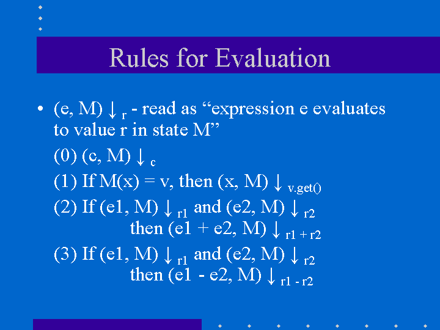
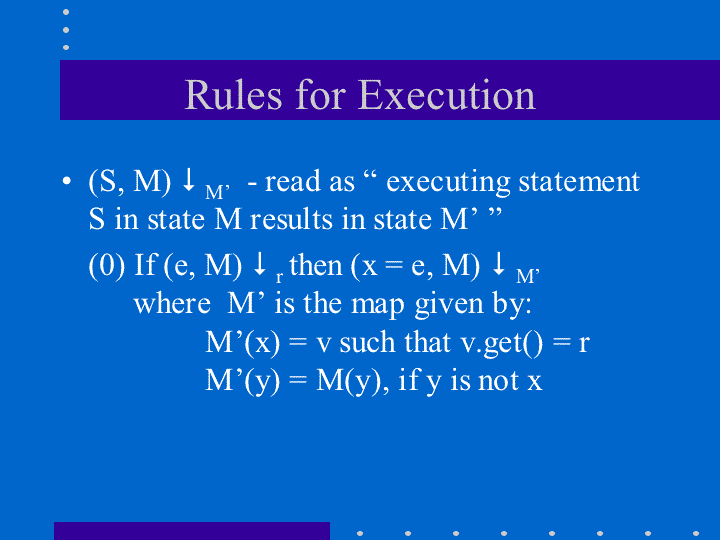
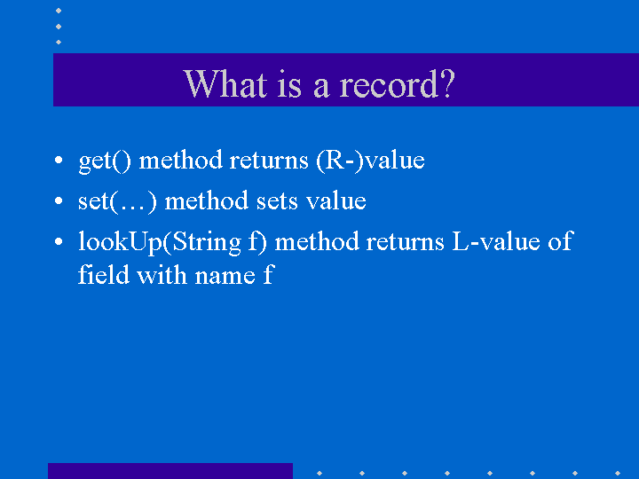
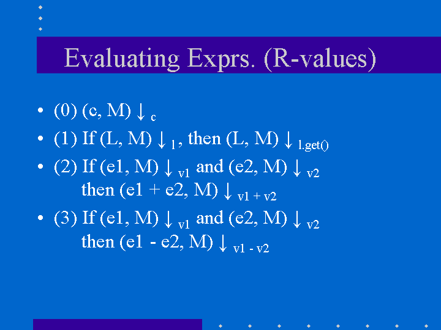
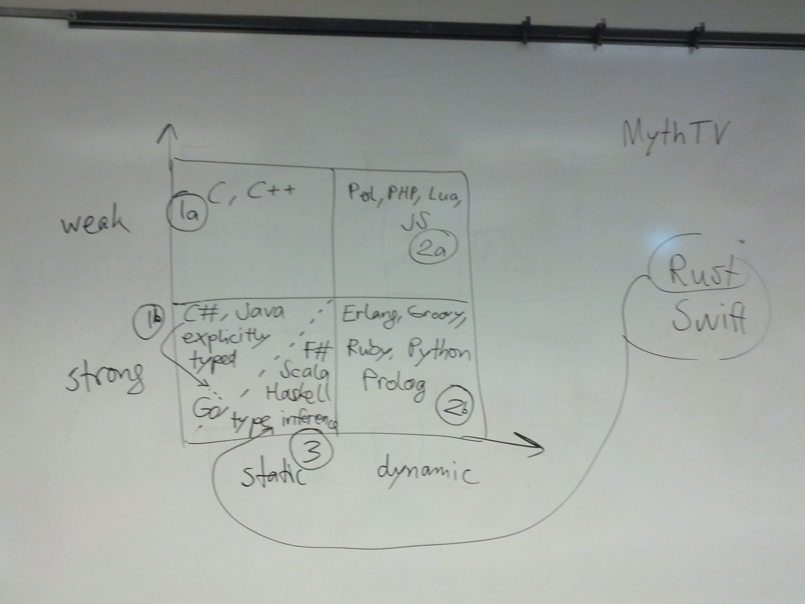
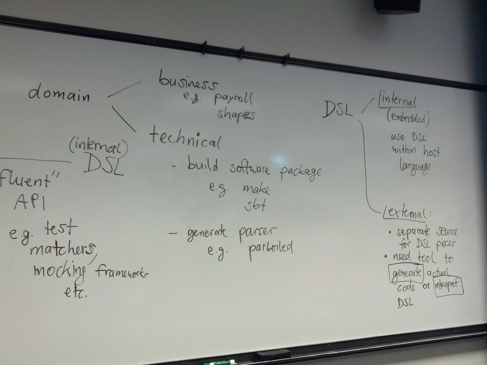
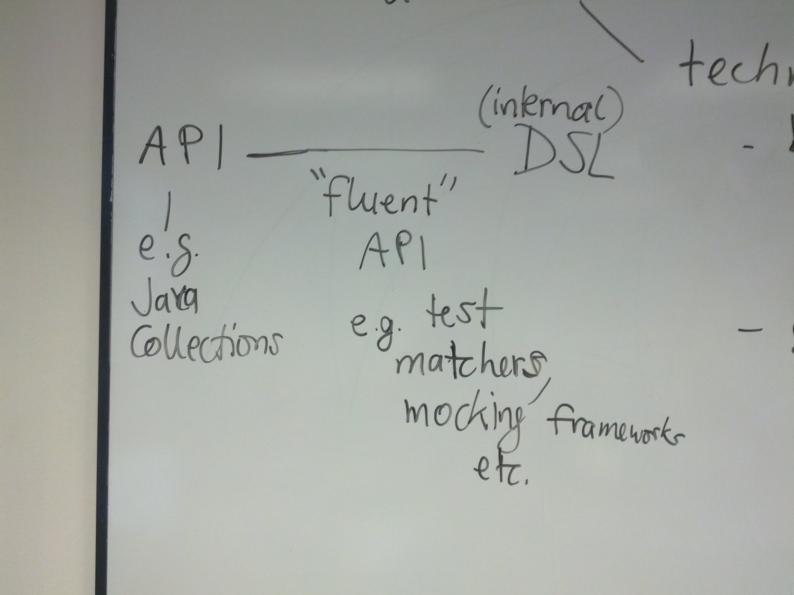

In this chapter, we discuss how we can represent and ultimately execute or interpret programs in a particular language. To this end, we need to talk about the toolchain required to do so, as well as techniques for defining the meaning (semantics) of programs in our language.
We will start with an overview of the phases of programming language compilation/interpretation toolchain:
Reference: Mogensen
Cross-compilation is a useful technique when the target environment does not provide sufficient computational resources to compile software in the target environment itself. Common examples include mobile phones and other embedded devices. For example, one usually develops Android apps on a development machine, tests them on an Android virtual device (emulator), and deploys them to an actual phone or tablet.
The following example shows cross-compilation of a small C program on a development machine and execution in the target environment.
First, we compile the source on our development machine, in this case, a hosted Linux VM using the OpenWrt embedded Linux toolchain:
[laufer@boole:~/Work/hello] 130 $ cat hello.c
main() {
puts("hello ETL!");
}
[laufer@boole:~/Work/hello] $ ~/Work/OpenWrt-SDK-15.05.1-ramips-rt305x_gcc-4.8-linaro_uClibc-0.9.33.2.Linux-x86_64/staging_dir/toolchain-mipsel_24kec+dsp_gcc-4.8-linaro_uClibc-0.9.33.2/bin/mipsel-openwrt-linux-uclibc-gcc hello.c
Now we deploy the resulting executable to the target environment using, say, scp.
Finally, we run this executable natively on a MIPS-based embedded Linux device sold as a “portable travel router”:
root@ExPodNano:~# ldd ./a.out
libgcc_s.so.1 => /lib/libgcc_s.so.1 (0x770d5000)
libc.so.0 => /lib/libc.so.0 (0x77069000)
ld-uClibc.so.0 => /lib/ld-uClibc.so.0 (0x770f9000)
root@ExPodNano:~# ./a.out
hello ETL!
In this section, we will discuss the key front-end stages, lexical analysis and syntax analysis, and related concepts and techniques.
Semantics, a formalization of the meaning of programs in a particular language, includes static and dynamic semantics.
The Interpreter pattern is related to the discussion of dynamic semantics.
In this section, we discuss the design of an interpreter and programming environment for a simple imperative language.
The accompanying lecture is available as a set of screencasts:
We are leading toward building an interpreter for a language resembling JavaScript with object-like features. We are doing this with two aims in mind:
Our language has the following features:
Integer expressions given by the BNF grammar:
e ::= variable
| const
| e1 + e2
| e1 - e2
Statements given by the BNF grammar:
S ::= x = e
| S1 ; S2
| while (e) S
In the context of the lectures so far, we have made the following changes. We have added variables to expressions, thus we can handle cases like x + 3, whereas earlier we could only write expressions such as 4 + 3. We have also introduced the assignment statement as a way to change the contents of a variable. In addition, we allow statements to be put in sequence. We also permit simple while expressions, where the guard is an expression and the loop body is executed while the gurad expression evaluates to a non-zero integer value.
We first formalize the intuitive execution semantics of the toy language. The point of doing this is to present the basic ideas in the interpreter without getting tied up in the programming details of the interpreter. In any case, these details are presented later in this lecture. Since our toy language has variables, we need to keep track of the state of variables. We view variables as objects with two capabilities:
We think of the state of the program (memory store), which we write M, as a map that associates identifiers with variable objects.
The rules for evaluating expressions are quite simple.
The evaluation rules are written out precisely in the following picture.

The rules for executing statements is as follows. In contrast to expression evaluation, statement execution does not yield a result. The primary consequence of executing a statement is the side effect on the store, ie. changes in the values of variables.
The execution rules are given in the following pictures:

Note that the connection between the various statements is that they share a single store, ie. in the sequence of statements x = 2; y = x + 1, the second reference to x reflects the effect of the first assignment because of the (shared) store between the two assignment statements.
We now go ahead and write the interpreter program. The entire code is available as part of the misc-scala example. A similar example but based on F-algebras and with better runtime error handling is also available: simpleimperative-algebraic-scala.
In this section, we discuss the design of an interpreter and programming environment for a simple imperative language with records (like classes with public fields and without methods).
We are leading toward building an interpreter for a language resembling JavaScript with object-like features. We are doing this with two aims in mind:
We now consider the changes that arise from the addition of records. Thus, we permit:
Our language has the following features:
The syntactic feautures of our language are captured by the following grammar. For motivation, the sort of program that we are interested is exemplified by:
StudentCourseRecord = record
int firstExamScore;
int secondExamScore;
int totalScore;
end;
StudentSemRecord = record
StudentCourseRecord course1;
StudentCourseRecord course2;
end;
StudentSemRecord r = new StudentSemRecord();
r.course1 = new StudentCourseRecord();
r.course1.firstExamScore = 25;
r.course1.secondExamScore = 35;
r.course1.totalScore = r.course1.firstExamScore + r.course1.secondExamScore;
r.course2 = r.course1;
In the C language, such things are known as structs. In familiar object-oriented terminology, we can think about them in this way:
The record type definitions in the previous example would look as follows in Java, and the rest of program would look the same:
class StudentCourseRecord {
public int firstExamScore;
public int secondExamScore;
public int totalScore;
}
class StudentSemRecord {
public StudentCourseRecord course1;
public StudentCourseRecord course2;
}
Formally, we proceed via the following BNF grammars. To simplify life for us, we will ignore type information. In this BNF grammar, we are a little bit more careful to separate L(eft) values and R(ight) values. L-values are those that can appear on the left hand side of an assignment statement, and R-values are those that appear on the right hand side of an assignment.
Record definitions are given by the BNF grammar:
Defn ::= record
FieldList
end
FieldList ::= fieldName, FieldList
| fieldName
L-values (fields selected from records, as well as variables) are given by the BNF grammar:
Lval ::= e.fieldName
| variable
Expressions (R-values) are given by the BNF grammar:
e ::= new C
| Lval
| const
| e1 + e2
| e1 - e2
Statements are given by the BNF grammar:
S ::= Lval = e
| S1; S2
| while (e) do S
We first formalize the intutive execution semantics of the toy language. As before, the point of doing this is to present the basic ideas in the interpreter without getting tied up in the programming details of the interpreter. In any case, these details are presented later in this lecture. In particular, in this initial first cut, we will begin by ignoring declarations. Also, in this new presentation
Recall that we viewed variables as objects with two capabilities:
Records are thought of in a similar light.

As before, we think of the state of the program, which we write S, as a map that associates identifiers with variable objects. Furthermore, as before, we distinguish evaluation and execution. In evaluation, there are two subcases, evaluating to an L-value and evaluating to an R-value.
There are two ways of having L-values. One is via variables and the second is via field selection.
These evaluation rules are written out precisely in the following picture.
Our earlier rules for evaluating R-values are presented again below..

The rules for executing statements are as follows. They are similar to the ones seen before. The primary consequence of executing a statement still is the side effect on the store, ie. changes in the values of variables.
The execution rules are given in the following pictures:
Type systems are an important aspect of programming languages. We identify the following dimensions in the type system design space:

Additional information is available here:
Todo
elaborate on the design space for polymorphism (Cardelli/Wegner)
Domain-specific languages are special-purpose languages for solving problems in particular domains. We identify the following dimensions:

In addition, there is a continuum between APIs and internal DSLs.

Additional information is available here: